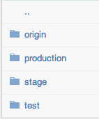
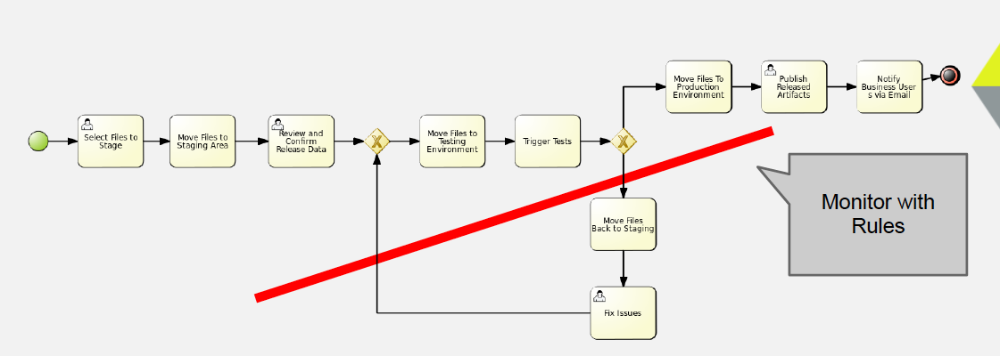
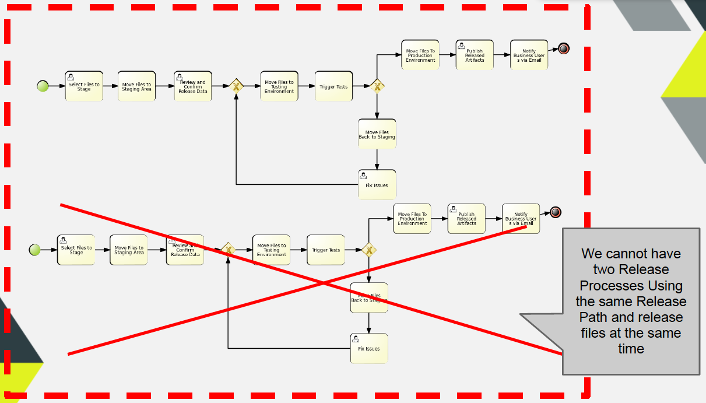
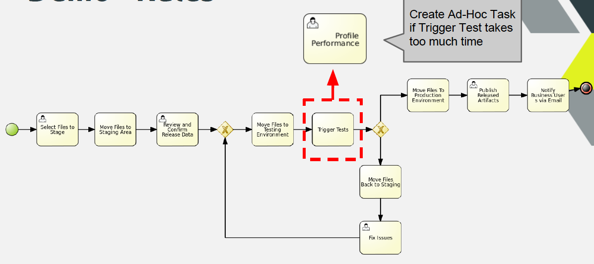

jBPM Console NG (Update): Rules + Processes + Events
Hi everyone! I’m back with another update about the jBPM Console NG. Yesterday we did a quick demo about the console current features in the JBUG London meetup. Today I’ve decided to explain the demo in more depth and also explain the last slides from the presentation which describe some scenarios where events and rules influence the execution of our business processes.
Introduction
The main idea of the demo is to show how rules, processes and events can be used to monitor our business processes and influence their execution. In order to understand the runtime behavior we need to obviously understand how Rules and Events works, but I will start explaining the business use case first in order to explain what we are trying to achieve.
The Business Process that we want to execute looks like the following image:
This is just a normal process, it includes Human Interactions and System Interactions. We will handle the Human Interactions with the Human Task Services and the System to System interactions will be handled with different WorkItemHandlers implementations.
The process is about releasing artifacts. In order to make a release the files from an specific artifact needs to be staged. We have three directories where we will move the files to be released and they will be processed accordingly. Basically, we will pick a set of files from a repository that has the following directory structure:

- Directory Structure
The sequence will be: Origin (where the original files will be placed for the release process) -> Stage (reviewed by a Person) -> Test (automatically tested) -> Production.
Notice that if the automatic tests fails a special path will be followed and a Person will be in charge of fixing the issues and move the files back to the Staging area.
Keeping our process as simple as possible
We don’t want to complicate our business process, we want to keep the process definition as clear and simple as possible. We don’t want to add tons of activities to check different situations that doesn’t describe the normal flow of actions. But at the same time we want to enforce some extra requirements and deal with exceptional business situations. For recognizing situations where we want to enforce different business policies or recognize business exceptions we can start using rules. If we want to recognize situations that involves time intervals we can include Fusion into the picture.
As I’ve explained in previous posts, there are several rules to analyze our processes executions using Rules, but from a very high-level perspective we can do the following:
- Analyze a single process and the process contextual information to execute some actions or influence the process state
- Analyze a group of processes running in the same context as a logical group and execute an action that can be related with one particular instance, create one or a group of new new instances, terminate/abort one or a group of running instances, create one or a group of human tasks, or execute one or a set of actions.
To demonstrate the different things that you can do we have chosen three different things that we can do without adding more complexity to our process definition:
- If an instance of the process go 2 or more times through the Fix Issues branch, we want to get a warning or notify someone about this situation to take an action. Imagine the pain of doing this kind of checks inside the business process, probably adding a new process variable to check the amount of executions of each path, a real nightmare that complicates the process definition.

- Paths and Activities Evaluations
- If an instance is doing a release with a set of files or pointing to an specific repository, we must not allow two process instances working with the same resources. If you think about this restriction that involves multiple process instances then it is clear that the logic of checking those restrictions cannot be placed inside a process definition, because it’s not a restriction that will be applied per instance. If you think about this kind of situations, you will see that there a lot of similar cases where you can apply more intelligent restrictions to a set of process instances. The main problem is that if we have a “Normal/Old” process engine your application will need to handle those kind of things, or once again you will need to start doing some hacks in order to make that work. Most of the time using traditional BPMSs you don’t even think about how to handle these scenarios, because the tooling doesn’t even support them.

- Multi Process Instance Evaluations
- In some situations we want to solve cross cutting concerns that are solved in multiple processes in the same way. Sometimes we have tasks that are done in several business processes, but we don’t want to include the task as part of the process definition because it’s a generic task that its not related with the business goal of that business process, but it’s related with the work that needs to be done to keep things running. In such cases, we can create an Ad-Hoc task to deal a particular situation. In this case the example shows a task that is being created to improve the performance of an automated task if the execution takes longer than we have expected. We can define the SLAs using rules and dynamically create a human task if it’s needed.

- Ad-Hoc Task
jBPM Console NG – technical side
Let’s analyze from the technical perspective how the infrastructure should provide us a way to handle situations likes the ones described before. Before going into the rules that are identifying and reacting on different situations, we need to understand how to generate the data that the rule engine will use.
First of all we need to notify the Rule Engine about the Process Instances, so it handle them as facts. For this reason we attach the following process event listener to our sessions:
This process event listener is in charge of inserting, updating and retracting the Process Instance from the Knowledge Session where the process is running. It also keep up to date the process variables that are modified inside the process. This listener also generate and insert Drools Fusion events that can be used for temporal reasoning.
The expected results when we attach this ProcessEventListener to our sessions is:
- Every time that we create a process instance , the Process Instance object will be available to the rule engine to create rules about it.
- When a process instance is completed it is automatically retracted from the rule engine context
- When a process variable is modified/updated the Process Instance fact is updated as well
- Every time that an activity is executed “Drools Fusion” events are created and inserted into the session before and after the task is executed. We as users have the responsibility to define these types as events, so the engine can tag them with the correspondant timestamp (Look at the rules file).
Inside the session that have attached this listener we will be able to:
- Write rules about Process Instances and their internal status, including process variables
- Write rules that identify situations where we want to measure time between different activities of the same process or a group of processes
- Influence the business processes execution based on different scenarios
- If we insert into the session more business context, we will be able to mix all the information that is being generated by the processes execution with our business context to recognize more advanced scenarios
- Mix all of the above
Resources and Git Backend
One more important thing if you want to try this alpha version, is to understand that we are now picking up all the resources that are being used by the runtime from a Git Repository. This means that our backend repository in this case is github.com. We store all our assets in this repository, and we build up different sessions using the resources located in the remote repository. This gives us a lot of advantages, but the integration is not finished yet. In the future you will be able to point to different repositories and fetch resources on demand to build new runtimes. For now you need to understand that Forms, Processes, Rules and all the configuration resources are being picked up from a remote repository, abstracting our application from where the resources are stored.
Rules, Processes & Events
Once we have all the data inside our session we can start writing our rules.
The complete rules file used for this demo can be found here:
Here are some things that we need to understand from this drl file:
- Event Declarations: We need to inform the rule engine which facts will be treated as Events. Notice the first lines after the imports:declare ProcessStartedEvent@role(event)end
In this case we are defining that all the insertion of ProcessStartedEvent needs to be handled as events, which are a special type of facts. - We can make services available for the rules to use. For this example I’m injecting the services as globals:global RulesNotificationService rulesNotificationService;global TaskServiceEntryPoint taskService;The TaskServiceEntryPoint will allow us to create and manage tasks from rules. The RulesNotificationService is exposing to the outside world the rules execution. It’s a quick way to notify the users about certain situations. You can think about it as a simple log service about what is happening inside our sessions.
- Then you can write rules about Processes and the Events generated by the processes:rule “Fix Issues Task pending for more than 30 seconds”when$w1: WorkflowProcessInstanceImpl($id: id)$onEntry: ProcessNodeTriggeredEvent(
processInstance.id == $id,
$nid: nodeInstance.id,
nodeInstance.nodeName == “Fix Issues”) from entry-point “process-events”$onExit: ProcessNodeLeftEvent(
this after[30s] $onEntry,
processInstance.id == $id,
nodeInstance.id == $nid,
nodeInstance.nodeName == “Fix Issues”) from entry-point “process-events”
then….So this rule is matching situations where a particular node inside (Fix Issues) of our business processes is taking more than 30 seconds to be executed. Notice that the process instance events are being inserted in a special entry-point called “process-events”. I suggest you to take a look at the other rules that are being analyzed inside the demo, so you can get in idea about what kind of things can be done in this environment.
DEMO

jBPM Console NG update 14/12/2012 from salaboy on Vimeo.
Full Presentation at JBUG London
Stay tuned for more updates about the console and the book!
New Meetup Scheduled @ -> Barcelona -> http://salaboy.com/2012/12/16/barcelona-jug-jbpm5-developer-guide-presentation-191212/